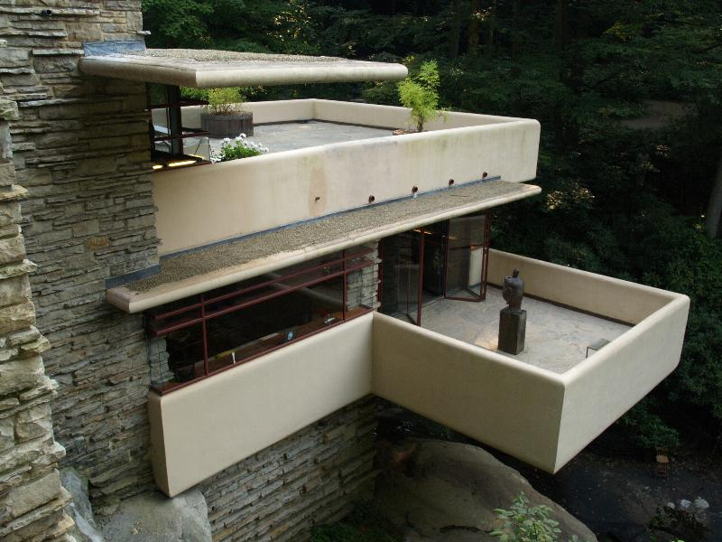
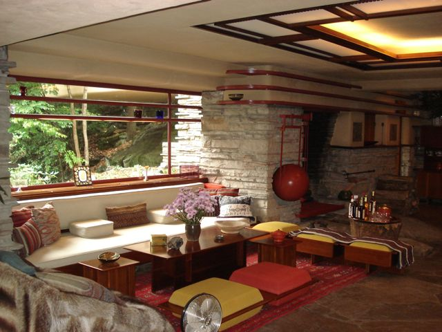

The terrace

The interior of Fallingwater, showing a sitting area with furnishings designed by Wright.
Fallingwater stands as one of Wright's greatest masterpieces both for its dynamism and for its integration with its striking natural surroundings. It has been described as an architectural tour de force of Wright's organic architecture.
Wright's passion for Japanese architecture was strongly reflected in the design of Fallingwater, particularly in the importance of interpenetrating exterior and interior spaces and the strong emphasis placed on harmony between man and nature. Contemporary Japanese architect Tadao Ando has said of the house:“I think Wright learned the most important aspect of architecture, the treatment of space, from Japanese architecture. When I visited Fallingwater in Pennsylvania, I found that same sensibility of space. But there was the additional sounds of nature that appealed to me.”
The organically designed private residence was intended to be a nature retreat for its owners. The house is well-known for its connection to the site. It is built on top of an active waterfall that flows beneath the house.The stone floors are waxed, while the hearth is left plain, giving the impression of dry rocks protruding from a stream.
Integration with the setting extends even to small details. For example, where glass meets stone walls no metal frame is used; rather, the glass and its horizontal dividers were run into a caulked recess in the stonework so that the stone walls appear uninterrupted by glazing. From the cantilevered living room, a stairway leads directly down to the stream below, and in a connecting space which connects the main house with the guest and servant level, a natural spring drips water inside, which is then channeled back out.
Bear Run and the sound of its water permeate the house, especially during the spring when the snow is melting, and locally quarried stone walls and cantilevered terraces resembling the nearby rock formations are meant to be in harmony. The design incorporates broad expanses of windows and balconies which reach out into their surroundings. In conformance with Wright's views, the main entry door is away from the falls.
On the hillside above the main house stands a four-bay carport, servants' quarters, and a guest house. These attached outbuildings were built two years later using the same quality of materials and attention to detail as the main house. The guest quarters feature a spring-fed swimming pool which overflows and drains to the river below.
Wright had initially planned to have the house blend into its natural settings in rural Pennsylvania. In doing so, he limited his color choices to two colors, light ochre for the concrete and his signature Cherokee red for the steel. After Fallingwater was deeded to the public, three carport bays were enclosed at the direction of Kaufmann Jr. to be used by museum visitors to view a presentation at the end of their guided tours on the Western Pennsylvania Conservancy (to which the home was entrusted). Kaufmann Jr. designed its interior himself, to specifications found in other Fallingwater interiors by Wright.
Time called Fallingwater Wright's "most beautiful job," and it is listed among Smithsonian's "Life List of 28 places to visit before you die." The house was designated a National Historic Landmark in 1966. In 1991, members of the American Institute of Architects named Fallingwater the "best all-time work of American architecture" and in 2007, it was ranked 29th on the list of America's Favorite Architecture according to the AIA. It and several other properties by Wright were inscribed on the World Heritage List under the title "The 20th-Century Architecture of Frank Lloyd Wright" in July 2019.